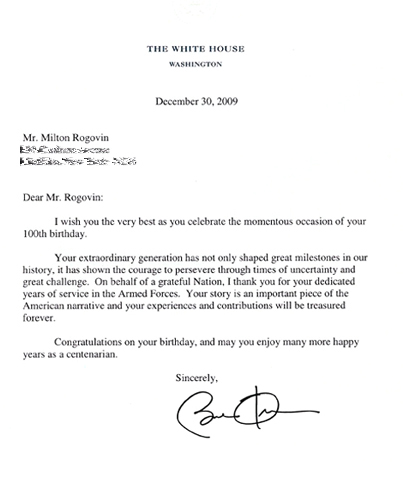

Chronology
1909
Milton Rogovin is born in New York City, the third son of Jacob and Dora (Shainhouse) Rogovin. Jacob had emigrated from Lithuania in 1904, followed in 1905 by Dora and baby Sam, born in 1904; their second son, Louis, is born in 1907. The family runs a small dry-goods store on Park Avenue between 112th and 113th Streets in Manhattan.
1920
Business conditions worsen after World War I, and the Rogovin family moves their store to the Bay Ridge neighborhood in Brooklyn; Milton commutes to Stuyvesant High School in Manhattan.
1927-1931
Studies at Columbia University, graduating with a Bachelor of Science degree in Optometry. Following the loss of the family's home and store after the onset of the Great Depression, Jacob Rogovin dies of a heart attack four months before Milton's graduation.
1932
As the Depression deepens, Milton begins to question why millions are unemployed. “My real education began after I graduated from Columbia,” he says. “I could no longer be indifferent to the problems of people, especially the poor, the forgotten ones.” He attends classes in political economy with instructors from the Workers' School, begins to read the Daily Worker and New Masses, and is introduced to the photographic work of Jacob Riis and Lewis Hine. In Manhattan, he works as an optometrist and becomes active in the Optical Union.
1938
Moves briefly to Niagara Falls and then to Buffalo, New York. In Buffalo, is a charter member of the United Optical Workers Local Industrial Union 951 of the Congress of Industrial Organizations (CIO).
Active in the American League Against War and Fascism, and participates in fundraising for ambulances and medical supplies in support of the Republican forces fighting fascism in Spain.
At the wedding reception for one of his employer's daughters, meets Anne Snetsky (the family name is changed to Setters), born August 4, 1918. He initiates a conversation about the Spanish Civil War; she is initially uninterested in the topic, but her politics soon change.
1939
With Anne's encouragement, opens an optometric office on Chippewa Street in Buffalo that provides service primarily to the city's union members.
1942
Milton and Anne marry on April 7.
Purchases his first camera.
In November Milton volunteers and is inducted into the United States Armed Forces. Initially assigned to training as an X-ray technician for the Air Force, he is transferred to the ground forces and serves as an optometrist in the United States Army until 1945.
1943
While attending X-ray training school in Indiana, wins first prize in a photography contest sponsored by the school with a photograph of a local waterfall.
1944
Daughter Ellen born. Milton is denied his request to see Anne and Ellen before going overseas, and departs for England, where he works in a hospital in Cirencester.
1945
Returns to Buffalo, where his brother Sam, also an optometrist, had been running Milton's optometric office while Milton was in the armed forces. Sam and Milton establish Consumers Eyesight Service as partners. Milton again becomes active in union and other political work, including voter registration in Buffalo's African American community. With the onset of the Cold War, Milton and Anne come under surveillance for their political activities.
1946
Son Mark born.
1947
Daughter Paula born.
1950
As the Cold War intensifies, Milton and Anne actively protest the arrest of Ethel and Julius Rosenberg, who are accused of spying for the Soviet Union. Anne works to raise money for the Rosenbergs' defense; the family is devastated when Ethel and Julius Rosenberg are executed in 1953.
1953
Travels to Mexico with Anne and meets socially conscious Mexican artists; returns to Mexico intermittently through 1957 and begins his first serious photographic work.
1957
Milton is summoned before the House Committee on Un-American Activities. He refuses to answer any questions other than his name and occupation, and in the Buffalo press is proclaimed "Buffalo's Number One Red." As a result of these attacks, his family is shunned and his optometric practice is severely curtailed. Anne refuses to sign the "Loyalty Oath" required for teachers in the Buffalo public schools, and is hired to work for the Board of Cooperative Education as a Special Education teacher.
Milton is invited by his friend William Tallmadge, a professor of music at State University College in Buffalo, to accompany Tallmadge while he makes recordings at a Holiness Church in Buffalo's African American community and to make photographs of the church services. His political voice virtually silenced, Milton realizes that through photography he can make people aware of social and economic inequities and of the problems of the poor. Tallmadge completes his work in three months; Milton works in the storefront churches of Buffalo for three years and produces his first social documentary series. The photographer Minor White offers advice on ways to effectively convey motion photographically, and introduces him to the use of the bare-bulb strobe that Milton will employ throughout subsequent photographic series. Through experience, and through White's critique, he matures as a photographer and solidifies his conception of his work as serial rather than individual images. The Storefront Church series marks the beginning of his commitment to social documentary photography, as a means of speaking about the struggles of the people he calls "The Forgotten Ones."
1961
Begins photographing in Buffalo's East Side community that surrounds the storefront churches.
1962
During the summer, travels with Anne to West Virginia and eastern Kentucky to photograph miners and their families. In Beckley, West Virginia meets Dr. Donald Rasmussen, an authority on black lung disease, who helps them make connections with miners in the area. Milton and Anne return to Appalachia each summer through 1971 to photograph and record interviews with miners. In October, Minor White publishes Milton's Storefront Church series, with an introduction by the eminent sociologist and civil rights leader W.E.B. DuBois, in Aperture magazine.
Throughout the 1960s, the Rogovin family is active in Civil Rights and anti-Vietnam War protests.
1963
Begins making photographs of Native Americans on reservations in the Buffalo area.
1967
After contacting renowned Chilean poet Pablo Neruda about collaborating on a project in Chile, Milton is invited by Neruda to his home in Isla Negra, where he photographs the poet's home by the sea. He then travels to the island of Chiloé makes a series of photographs for which Neruda later writes an introduction.
1970
Moves his optometry practice to a smaller office on Court Street when his brother Sam retires, and cuts back his hours in order to devote more time to photography.
1972
Accompanied by Anne, begins photographic documentation of social conditions on the Lower West Side of Buffalo. As Milton and Anne gain the trust of the community, they photograph the people of the neighborhood in their homes as well as in public spaces, completing the first of Milton's Lower West Side series in 1975. For this series he uses the twin-lens Rolleiflex camera that he will continue to employ throughout his photographic career.
c. 1972-75, Lower West Side, Buffalo, NY
Receives Master of Arts degree in American Studies from the State University of New York at Buffalo. Through 1974, teaches Social Documentary Photography classes at the State University of New York at Buffalo.
1975
His first major exhibition, "Milton Rogovin: Lower West Side, Buffalo, New York," is displayed at the Albright-Knox Art Gallery in Buffalo. So that the Lower West Side community sees the work, a smaller exhibit runs concurrently at the Boy's Club on the Lower West Side and transportation is provided to the Albright-Knox Art Gallery.
1976
Inspired by Bertold Brecht's poem "A Worker Reads History", begins Working People series in the steel mills, foundries, and automobile factories of Western New York. Photographs men and women at their job sites and at home with their families. Several years after he completes his work in the steel mills, nearly all of these close, leaving thousands of workers jobless.
1977
Begins photographing the Yemeni community of nearby Lackawanna, New York and continues this series through 1979.
1978
With the support of Anne and their children, retires from optometric practice to devote himself full-time to photography.
1981
Begins the work that will become his epic "Family of Miners". With Anne, returns to Appalachia to photograph women coal miners at work in the mines and at home. In conjunction with exhibits of his "Storefront Church" and "Working People" series in Paris, travels to northern France to photograph coal miners and their families.
1982
Milton and Anne travel to Scotland. Assisted by the Scottish coal miners union, they photograph miners, their families, and mining villages.
1983
Wins the W. Eugene Smith Memorial Fund Award for Documentary Photography.
With Anne, travels to Spain to photograph rural and coal mining communities. They also view Francisco Goya's paintings in the Prado Museum in Madrid and visit the memorial that marks the area first attacked by Franco's forces in 1936 in their assault against Spain's democratically elected government.
1984-1986
Returns, with Anne's encouragement and accompanied by her, to again photograph his Lower West Side subjects; paired with his initial photographs, he titles this series "Lower West Side Revisited".
Makes the first of three trips to Cuba to photograph factory workers and nickel miners.
Travels to the Federal Republic of Germany (West Germany) to photograph miners at work and in their homes in the Ruhr, Germany's coal and steel-producing region.
1985
Milton's first major retrospective is exhibited at the Albright-Knox Art Gallery in Buffalo. In conjunction with this exhibition, Milton Rogovin: The Forgotten Ones, the first publication to offer a comprehensive overview of his work, is published by the Albright-Knox Art Gallery and the University of Washington Press.
Buffalo's Light Rail Rapid Transit System begins operation; seven of Milton's photographs of working people, reproduced on a monumental scale in porcelain enamel, are installed in the Humboldt-Hospital Station.
1986
Anne retires from teaching.
Milton and Anne are invited by the Chinese Friendship Committee to photograph miners and workers in other industries in the People's Republic of China; also photographs classes at the National School of Dance and exhibits his Working People series at the National Art School in Beijing.
1987
Re-photographs steel workers in the Buffalo area who had lost their jobs as a result of plant closings. These images of individuals and their families, photographed previously for his Working People series, convey the devastation wrought by the cessation of steel production in the Buffalo area. A collaborative project with Michael Frisch, professor of American Studies at the State University of New York at Buffalo, who interviewed these workers, Portraits in Steel will be published in 1993 by Cornell University Press.
Returns for the last time to Appalachia to photograph miners.
1988
Accompanied by Anne, in Mexico photographs miners at work and at home with their families in the mining region of Pachuca.
1989
The governor of Matebeleland North, a province in Zimbabwe, visits Buffalo. After Milton and Anne tell him about the Family of Miners series, he offers them assistance in obtaining permission to photograph the miners of Matebeleland. Milton and Anne travel to Zimbabwe, where they are guests at the governor's home, and they photograph gold and tin miners in the mines and at home with their families in the nearby housing compounds.
Receives the Distinguished Achievement Award from the Arts and Sciences Division of the State University of New York at Buffalo.
1990
Milton and Anne with a family of miners, Czechoslovakia
Travels with Anne to Czechoslovakia. Photographs Czech and Roma (Gypsy) miners in the coalmines and at home, where he sees the Roma families living in apartment houses abandoned by the Czechs. With this journey, he completes the "Family of Miners" series.
1992-1994
Following his recovery from heart surgery and treatment for prostate cancer, at Anne's instigation Milton and Anne return for a third time to photograph the Lower West Side, completing his Lower West Side Triptychs comprising images of individuals and families photographed over the course of twenty years during three separate visits.
Exhibits "Working People" at the Smithsonian Institution's National Museum of American History in Washington, DC.
1993
Exhibits Lower West Side Triptychs at the Art Institute of Chicago.
1994
Receives honorary doctorate degrees from the State University of New York at Buffalo and Buffalo State College.
Triptychs: Buffalo's Lower West Side Revisited is published by W.W. Norton and Company with an introduction by noted biologist Stephen Jay Gould.
1996
Receives Citizen of Distinction Award from the City of Buffalo.
Purchasing eighty-three of his photographs, The Getty Center in Los Angeles makes its first acquisition of Milton Rogovin's work.
1997
His vision diminished by cataracts, dismantles his basement darkroom and sells his camera. At Anne's suggestion, begins writing his autobiography.
1999
The Library of Congress in Washington, DC becomes the repository for his negatives, contact sheets and 1300 photographs; he is the first living photographer since the 1970s whose work is archived as a national resource by this institution.
At Anne's encouragement, Milton writes seventy poems, each relating to a single photograph or set of photos.
2000
Receives New York State Governor's Arts Award.
Named one of the twentieth century's "top ten local cultural figures" by The Buffalo News.
Sound Portraits documentary radio producer, Dave Isay, encourages Milton to make one more set of photographs on Buffalo's Lower West Side. His vision restored by successful cataract surgery, Milton buys back the Rolleiflex camera he had sold several years earlier. Accompanied by Isay and his collaborators David Miller and filmmaker Harvey Wang, Milton and Anne return once more to the Lower West Side to interview and photographing decades before. Completed in 2002, these photographs join earlier "Triptychs" to become "Quartets."
"Milton Rogovin: A Retrospective" takes place at The Bulger Gallery, Ontario, Canada.
2001
The website, http://www.miltonrogovin.com, is launched by Milton's grandson Steven Bower.
2003
An exhibition of the Lower West Side "Quartets," Milton Rogovin: The Forgotten Ones is displayed at the New York Historical Society. In conjunction with this exhibition, Dave Isay, David Miller, and Harvey Wang's Milton Rogovin: The Forgotten Ones is published by The Quantuck Lane Press, New York.
Harvey Wang's Milton Rogovin: The Forgotten Ones wins the prize for best documentary short film at the TriBeCa Film Festival.
Milton's life partner and comrade for sixty-one years, Anne Rogovin, dies on July 7.
2004
"Nada queda atras: Milton Rogovin, Fotografias, Carlos Trujillo, Poemas," - Book of Photographs by Milton Rogovin, Poetry by Carlos Trujillo, Published by Ediciones Museo de Arte Moderno Chiloé, 2004.
Photographs from the "Family of Miners" series are displayed at The J. Paul Getty Museum's "Recent Acquisitions" exhibition.
"Syracuse Cultural Workers" travels a retrospective exhibit to travel to community centers, union halls, schools, libraries.
Mark Rogovin begins work as curatorial manager of Milton's photography. He develops educational uses of Milton's photography on the Rogovin website.
With Eyes and Soul: Images of Cuba, containing poems by award winning Cuban poet Nancy Morejón and photographs from Milton's three trips to Cuba, is published by White Pine Press in Buffalo.
The House in the Sand has prose poems by Pablo Neruda and photographs by Milton Rogovin. The photographs were taken in Neruda's home in Isla Negra. This book was published by White Pine Press.
2005
The book Milton Rogovin: the Mining Photographs by Judith Keller is published by the J. Paul Getty Museum in Los Angeles.
2006
Milton Rogovin: The Making of a Social Documentary Photographer by Melanie Anne Herzog is co-published by the Center for Creative Photography in Tucson, Arizona and the University of Washington Press. Published to accompany Milton's retrospective exhibition at the Center for Creative Photography. This book features Milton's autobiographical writing and photographs from throughout his career while locating him within the history of social documentary photography and twentieth century social history.
The one-hour, award winning documentary film The Rich Have Their Own Photographers, created by filmmaker Ezra Bookstein and produced by MUSE Film and Television, premieres at New York's Lincoln Center with Pete Seeger as Master of Ceremonies.
2007
The Castellani Art Museum, Niagara Falls opens the traveling exhibition "Milton Rogovin: The Native American Series (1963-2002)," marking the first-ever exhibition of Rogovin's Native American photographs. Plans are underway for the exhibit to travel.
The Library of Congress receives 20,000 pages from Milton's correspondence files to add to the Rogovin Collection at the Library.
Receives Lifetime Achivement Award from The Arts Council, Buffalo.
The International Center of Photography in New York City awards Rogovin the Cornell Capa Award.
Rogovin celebrates his 98th birthday in December.
2008
Ellen and Mark Rogovin visit Chiloé, Chile, where Rogovin photographed for a collaborative project with Pablo Neruda in 1967. There they visited with people Rogovin photographed 40 years earlier.
Museo de Arte Moderno Chiloé opens exhibition of Milton Rogovin photographs.
Nada Queda Atrás (Nothing Left Behind), a book with with photographs by Milton Rogovin and poems by Chilean Carlos Truijillo, is published by the Museo de Arte Moderno Chiloé.
"A Yemeni Community: Photographs from the 1970s by Milton Rogovin" opens at the Arab American National Museum in Dearborn, Michigan. The Rogovin family was alerted about the opening of the AANM in 2005 by a Yemeni woman who was photographed by Milton when she was 6 in Lackawanna, New York.
Buffalo’s Mayor Byron W. Brown presents proclamation to Milton at his 99th birthday.
2009
Milton nominated for the National Medal of Arts.
The book From the Western Door to the Lower West Side with photographs by Milton Rogovin and poetry by Native American poet, Eric Gansworth, is published by White Pine Press, Buffalo, NY.
The book The Lens & The Pen: Photography and Poetry by Milton Rogovin is published by Palisade Press, Arroyo Seco, NM. This is the first publication of any of Milton’s poems, each relating to a single photograph or set of photos.
The 20-minute film Picture Man: The Poetry of Photographer Milton Rogovin, filmed by Isadore Bleckman, edited by Sharon Karp and produced by Mark Rogovin, makes its debut.
Major events at Burchfield Penney Art Center, Buffalo, NY celebrate Milton’s 100th Year. Included will be a reading by poet Eric Gansworth from the new book From the Western Door to the Lower West Side and an exhibition of photographs and writing from the book at the Art Center from September 5, 2009 - January 3, 2010.
The film The Rich Have Their Own Photographers makes its television debut on PBS affiliate WNED (Buffalo/Toronto).
On December 30th, Milton's 100th birthday was celebrated with family and friends. Milton received international felicitations and recognition including a personal letter from President Barack Obama.
Milton's 100th birthday cake with 100 flowers! Photo by Michelle Melin-Rogovin
President Barack Obama wishes Milton a Happy Birthday!
Milton's work is featured in national and international exhibitions including the Stockholm Museum of Modern Art, Luisotti Gallery, J. Paul Getty Museum, Danziger Projects, Artrage Gallery, CEPA Gallery, Arab American National Museum, Center for Creative Photography, Palm Springs Art Museum, Houston Art Museum and the Henry Art Gallery.
On December 31st, 2009, Dr. J. Patrick and Patricia Kennedy donated 3,300 Rogovin photographs to the Center for Creative Photography, University of Arizona, Tucson. This donation brings the CCP Rogovin Collection to 4,000 photographs.
2010
Solo exhibits of Milton's work in Rogovin 101, Museum of Fine Art Houston, Houston, Texas in conjunction with FotoFest 2010; Happy Birthday, Milton Rogovin, at Henry Art Gallery, University of Washington, in Seattle, Washington.
[June 2010] The Center for Study of Working Class Life presents Milton Rogovin its Award for Lifetime Contributions to Social Justice for Working People. The award is presented at the bi-annual "How Class Works" conference at the State University of New York at Stony Brook, on Friday, June 4, 2010.
Milton Rogovin receives the "Award for Lifetime Contributions to Social Justice for Working People".
[October 2010] "Picture Man the Poetry of Photographer Milton Rogovin" wins 1st prize for short documentaries in the Bayou City Inspirational Film Festival.
Congratulations to the star of the show, Milton Rogovin, and the film's crew: Sharon Karp (Director/Editor), Jerri Zbiral (Production Managerl, Mark Rogovin (Producer), Isadore Bleckman (Cinematography), and Sheera Bleckman (Assistant Editor).
The People V. the Optometrist," by Arthur Bleich, Rangefinder Magazine for Professional Photographers, January 2010
December 30, 2010 - Milton turns 101 years old!
A special feature on Milton in the New York Times, LENS blog
2011
On January 18, 2011, shortly after his 101st birthday, Milton Rogovin passed away.
Milton touched many peoples lives and documented an important piece of our human history. Milton's obituary, written by Benjamin Genocchio, is published in the NY Times.
2013
"SI NO FUERA POR LA LLUVIA: Milton Rogovin in Chile," written by Carlos Trujillo, poet and professor at University of Villanova. Published by Editorial Okeldan, Chile 2013.
Compiled by Melanie Herzog.